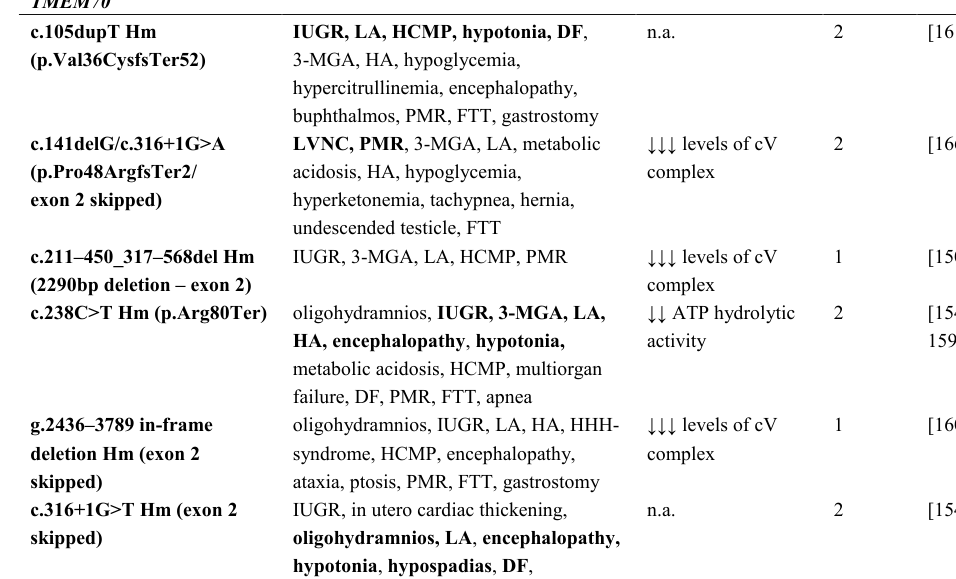

Mitochondrial complex V (ATP synthase) deficiency nuclear type 2 (MC5DN2) is the TMEM70-related form of isolated ATP synthase deficiency and by a wide margin the most common nuclear-encoded complex V disease — TMEM70 was identified in 2008 by homozygosity mapping in a large series of patients, and by 2015 at least 65 genetically confirmed patients had been reported, against a handful for every other nuclear complex V gene combined. TMEM70 is an ancillary factor required for the biogenesis of ATP synthase rather than a structural subunit; its loss leaves the respiratory chain complexes I-IV intact while the amount of assembled, functional complex V collapses. The classic presentation is neonatal mitochondrial encephalo-cardiomyopathy: severe muscular hypotonia and apnoeic spells from birth, hypertrophic cardiomyopathy, profound lactic acidosis and hyperammonaemia, with persistent 3-methylglutaconic aciduria as the biochemical signature. Genital anomalies (hypospadias, cryptorchidism) are common in boys, a feature unusual among mitochondrial diseases. Early mortality is high — in the founder-mutation natural-history cohort ten of 25 patients died within the first six weeks — but the disease is not uniformly lethal: survivors stabilise with hypotonia and psychomotor delay, the cardiomyopathy is typically non-progressive and can even regress, and later crises of life-threatening hyperammonaemia are triggered by intercurrent illness and fasting rather than by relentless neurodegeneration. Most patients carry the founder splice-site variant c.317-2A>G, which is strongly enriched in the Roma population; homozygosity for it is sufficient for molecular diagnosis without muscle biopsy in a typical clinical setting. MC5DN2 is distinguished from the maternally inherited MT-ATP6/MT-ATP8 diseases (separate dismech entries), which affect the same enzyme through mitochondrial-genome structural-subunit mutations, and from the very rare nuclear structural-subunit and assembly-factor deficiencies MC5DN1 (ATPAF2) and MC5DN3 (ATP5F1E).
Ask a research question about Mitochondrial Complex V (ATP Synthase) Deficiency, Nuclear Type 2. OpenScientist will conduct autonomous deep research using the Disorder Mechanisms Knowledge Base and PubMed literature (typically 10-30 minutes).
Do not include personal health information in your question. Questions and results are cached in your browser's local storage.
name: Mitochondrial Complex V (ATP Synthase) Deficiency, Nuclear Type 2
creation_date: "2026-09-16T02:30:00Z"
category: Mendelian
disease_term:
preferred_term: Mitochondrial complex V (ATP synthase) deficiency, nuclear type 2
term:
id: MONDO:0013546
label: mitochondrial complex V (ATP synthase) deficiency, nuclear type 2
description: >-
Mitochondrial complex V (ATP synthase) deficiency nuclear type 2 (MC5DN2) is
the TMEM70-related form of isolated ATP synthase deficiency and by a wide
margin the most common nuclear-encoded complex V disease — TMEM70 was
identified in 2008 by homozygosity mapping in a large series of patients, and
by 2015 at least 65 genetically confirmed patients had been reported, against
a handful for every other nuclear complex V gene combined. TMEM70 is an
ancillary factor required for the biogenesis of ATP synthase rather than a
structural subunit; its loss leaves the respiratory chain complexes I-IV
intact while the amount of assembled, functional complex V collapses.
The classic presentation is neonatal mitochondrial encephalo-cardiomyopathy:
severe muscular hypotonia and apnoeic spells from birth, hypertrophic
cardiomyopathy, profound lactic acidosis and hyperammonaemia, with persistent
3-methylglutaconic aciduria as the biochemical signature. Genital anomalies
(hypospadias, cryptorchidism) are common in boys, a feature unusual among
mitochondrial diseases. Early mortality is high — in the founder-mutation
natural-history cohort ten of 25 patients died within the first six weeks —
but the disease is not uniformly lethal: survivors stabilise with hypotonia
and psychomotor delay, the cardiomyopathy is typically non-progressive and
can even regress, and later crises of life-threatening hyperammonaemia are
triggered by intercurrent illness and fasting rather than by relentless
neurodegeneration.
Most patients carry the founder splice-site variant c.317-2A>G, which is
strongly enriched in the Roma population; homozygosity for it is sufficient
for molecular diagnosis without muscle biopsy in a typical clinical setting.
MC5DN2 is distinguished from the maternally inherited MT-ATP6/MT-ATP8
diseases (separate dismech entries), which affect the same enzyme through
mitochondrial-genome structural-subunit mutations, and from the very rare
nuclear structural-subunit and assembly-factor deficiencies MC5DN1 (ATPAF2)
and MC5DN3 (ATP5F1E).
parents:
- Mitochondrial Complex V Deficiency
- Mitochondrial Disease
synonyms:
- MC5DN2
- TMEM70 deficiency
- TMEM70-related mitochondrial encephalo-cardiomyopathy
- neonatal mitochondrial encephalo-cardiomyopathy, TMEM70 type
- ATP synthase deficiency due to TMEM70 mutation
classifications:
harrisons_chapter:
- classification_value: GENETICS_ENVIRONMENT_DISEASE
notes: >-
A Mendelian inborn error of energy metabolism with a founder allele,
diagnosed and managed as an inherited disorder rather than within one
organ-system Part.
- classification_value: CARDIOVASCULAR
notes: >-
Hypertrophic cardiomyopathy is present in three quarters of neonates and
is one of the two features that define the classic presentation.
- classification_value: ENDOCRINOLOGY_METABOLISM
notes: >-
Presentation is a neonatal metabolic crisis with lactic acidosis,
hyperammonaemia and 3-methylglutaconic aciduria, and later decompensations
are metabolic crises triggered by illness and fasting.
- classification_value: NEUROLOGIC
notes: >-
Survivors have persisting muscular hypotonia and psychomotor delay.
mechanistic_category:
- classification_value: mitochondrial disease
icimd_category:
- classification_value: complex_v_subunits_and_assembly_factors
notes: >-
TMEM70 is an ancillary biogenesis factor of complex V, the second half of
this ICIMD group's scope.
references:
- reference: PMID:18953340
title: "TMEM70 mutations cause isolated ATP synthase deficiency and neonatal mitochondrial encephalocardiomyopathy."
- reference: PMID:20335238
title: "Mitochondrial encephalocardio-myopathy with early neonatal onset due to TMEM70 mutation."
- reference: PMID:22231385
title: "Neonatal onset of mitochondrial disorders in 129 patients: clinical and laboratory characteristics and a new approach to diagnosis."
- reference: PMID:26550569
title: "ATP synthase deficiency due to TMEM70 mutation leads to ultrastructural mitochondrial degeneration and is amenable to treatment."
- reference: PMID:24564666
title: "Nuclear genetic defects of mitochondrial ATP synthase."
- reference: PMID:35203486
title: "Genetic Complementation of ATP Synthase Deficiency Due to Dysfunction of TMEM70 Assembly Factor in Rat."
- reference: PMID:28173120
title: "Knockout of Tmem70 alters biogenesis of ATP synthase and leads to embryonal lethality in mice."
inheritance:
- name: Autosomal Recessive
inheritance_term:
preferred_term: Autosomal recessive inheritance
term:
id: HP:0000007
label: Autosomal recessive inheritance
description: >-
Biallelic TMEM70 variants; most patients are homozygous for the c.317-2A>G
founder splice-site allele, frequently in consanguineous Roma families,
with healthy heterozygous parents.
evidence:
- reference: PMID:26550569
reference_title: "ATP synthase deficiency due to TMEM70 mutation leads to ultrastructural mitochondrial degeneration and is amenable to treatment."
supports: SUPPORT
evidence_source: HUMAN_CLINICAL
snippet: "A consanguineous family of Roma (Gipsy) ethnic origin gave birth to 6 children of which 4 were affected"
explanation: >-
Segregation in a consanguineous sibship with unaffected parents, the
pattern of autosomal recessive inheritance.
prevalence:
- population: Reported cases in the literature (2015)
measure_type: CASES_IN_LITERATURE
prevalence_class: RARE
notes: >-
At least 65 genetically confirmed patients reported by 2015; the most
common nuclear-encoded isolated ATP synthase deficiency, with marked
enrichment of the founder allele in the Roma population.
evidence:
- reference: PMID:26550569
reference_title: "ATP synthase deficiency due to TMEM70 mutation leads to ultrastructural mitochondrial degeneration and is amenable to treatment."
supports: SUPPORT
evidence_source: HUMAN_CLINICAL
snippet: "At least 65 patients with different genetically confirmed TMEM70 mutations were reported to date"
explanation: The published case count as of this 2015 report.
- reference: PMID:20335238
reference_title: "Mitochondrial encephalocardio-myopathy with early neonatal onset due to TMEM70 mutation."
supports: SUPPORT
evidence_source: HUMAN_CLINICAL
snippet: "The disease occurs frequently in the Roma population and molecular-genetic analysis of the TMEM70 gene is sufficient for diagnosis without need of muscle biopsy in affected children."
explanation: Population enrichment of the founder allele.
genetic:
- name: TMEM70
notes: >-
TMEM70 (8q21.11) encodes a 21 kD inner-mitochondrial-membrane protein of
three exons acting as an ancillary factor in ATP synthase biogenesis; the
precise molecular function is not fully determined. The founder splice-site
variant c.317-2A>G accounts for the great majority of alleles and is
strongly enriched in the Roma population, but it is not the whole spectrum:
at least 14 further TMEM70 mutations are reported, and the broader allelic
spectrum widens the phenotype to include hypospadias and pulmonary arterial
hypertension.
gene_term:
preferred_term: TMEM70
term:
id: hgnc:26050
label: TMEM70
relationship_type: CAUSATIVE
variants:
- name: TMEM70 c.317-2A>G
description: >-
Founder splice-site variant enriched in the Roma population; homozygosity
is the usual genotype in the classic neonatal presentation and defined
the 25-patient natural-history cohort.
type: splice site
clinical_significance: PATHOGENIC
evidence:
- reference: PMID:20335238
reference_title: "Mitochondrial encephalocardio-myopathy with early neonatal onset due to TMEM70 mutation."
supports: SUPPORT
evidence_source: HUMAN_CLINICAL
snippet: "Retrospective clinical data and metabolic profiles were collected and evaluated in 25 patients (14 boys, 11 girls) from seven European countries with a c.317-2A-->G mutation in the TMEM70 gene."
explanation: The founder allele defining the largest reported cohort.
- reference: PMID:26550569
reference_title: "ATP synthase deficiency due to TMEM70 mutation leads to ultrastructural mitochondrial degeneration and is amenable to treatment."
supports: SUPPORT
evidence_source: HUMAN_CLINICAL
snippet: "Genetic testing revealed a homozygous mutation (c.317-2A>G) in the TMEM70 gene."
explanation: The same homozygous founder allele in a further consanguineous Roma family.
evidence:
- reference: PMID:18953340
reference_title: "TMEM70 mutations cause isolated ATP synthase deficiency and neonatal mitochondrial encephalocardiomyopathy."
supports: SUPPORT
evidence_source: HUMAN_CLINICAL
snippet: "We carried out whole-genome homozygosity mapping, gene expression analysis and DNA sequencing in individuals with isolated mitochondrial ATP synthase deficiency and identified disease-causing mutations in TMEM70."
explanation: The gene-discovery study establishing TMEM70 as the cause of this disorder.
- reference: PMID:26550569
reference_title: "ATP synthase deficiency due to TMEM70 mutation leads to ultrastructural mitochondrial degeneration and is amenable to treatment."
supports: SUPPORT
evidence_source: HUMAN_CLINICAL
snippet: "To date, at least 14 additional TMEM70 mutations have been described leading to a broad clinical spectrum such as hypospadia"
explanation: >-
Establishes that the allelic spectrum extends well beyond the founder
allele, and that the wider spectrum carries additional phenotypes
(the same sentence continues to name pulmonary arterial hypertension).
pathophysiology:
- name: Loss of TMEM70 Ancillary Biogenesis Factor Function
biological_scale: MOLECULAR
description: >-
TMEM70 is an ancillary factor required for the biogenesis of mitochondrial
ATP synthase in higher eukaryotes. Biallelic loss-of-function variants —
usually the c.317-2A>G founder splice defect — remove this biogenesis
support. The causal role is proven by complementation: restoring wild-type
TMEM70 to patient cells restores assembly and metabolic function of the
enzyme complex.
role: trigger
genes:
- preferred_term: TMEM70
term:
id: hgnc:26050
label: TMEM70
biological_processes:
- preferred_term: mitochondrial ATP synthase complex biogenesis
term:
id: GO:0033615
label: mitochondrial proton-transporting ATP synthase complex assembly
modifier: DECREASED
downstream:
- target: Stalled F1 Intermediate Accumulation
causal_link_type: DIRECT
- target: Isolated ATP Synthase Deficiency
causal_link_type: DIRECT
evidence:
- reference: PMID:18953340
reference_title: "TMEM70 mutations cause isolated ATP synthase deficiency and neonatal mitochondrial encephalocardiomyopathy."
supports: SUPPORT
evidence_source: IN_VITRO
snippet: "Complementation of the cell lines of these individuals with wild-type TMEM70 restored biogenesis and metabolic function of the enzyme complex."
explanation: >-
Complementation shows the TMEM70 lesion is what causes the enzyme
deficiency: restoring the protein restores the complex.
evidence:
- reference: PMID:18953340
reference_title: "TMEM70 mutations cause isolated ATP synthase deficiency and neonatal mitochondrial encephalocardiomyopathy."
supports: SUPPORT
evidence_source: IN_VITRO
snippet: "Our results show that TMEM70 is involved in mitochondrial ATP synthase biogenesis in higher eukaryotes."
explanation: Establishes the molecular function that is lost.
- reference: PMID:24564666
reference_title: "Nuclear genetic defects of mitochondrial ATP synthase."
supports: SUPPORT
evidence_source: OTHER
snippet: "the other two ATPAF2 and TMEM70 encode specific ancillary factors that facilitate the biogenesis of ATP synthase"
explanation: >-
Review classifying TMEM70 as a biogenesis (ancillary) factor rather than
a structural subunit; graded OTHER as a synthesis of biochemical and
clinical reports.
- name: Stalled F1 Intermediate Accumulation
biological_scale: MOLECULAR
description: >-
TMEM70 acts late in ATP synthase assembly, after the soluble F1 head has
formed, so its loss stalls biogenesis at the F1 stage: the F1 oligomer is
built but cannot be completed into holo-enzyme, and free F1 complexes
accumulate. This is the mechanistic feature that distinguishes MC5DN2 from
the ATPAF2 sibling disorder (MC5DN1), where the F1 assembly chaperone ATP12
is lost, F1 itself cannot form, and free F1 does not accumulate. Shown
directly in the Tmem70-knockout mouse; human patient tissue shows the
reciprocal, reduced fully assembled complex with F1 subunits still
detectable.
downstream:
- target: Isolated ATP Synthase Deficiency
causal_link_type: DIRECT
evidence:
- reference: PMID:28173120
reference_title: "Knockout of Tmem70 alters biogenesis of ATP synthase and leads to embryonal lethality in mice."
supports: SUPPORT
evidence_source: MODEL_ORGANISM
snippet: "a marked accumulation of F1 complexes indicative of impairment in ATP synthase biogenesis that was stalled at the early stage, following the formation of F1 oligomer"
explanation: >-
Demonstrates the stalled-at-F1 assembly signature and free-F1 accumulation
in the constitutive Tmem70 knockout; graded MODEL_ORGANISM as a mouse
finding.
- name: Isolated ATP Synthase Deficiency
biological_scale: CELLULAR
description: >-
The content of fully assembled, functional complex V falls to a fraction of
normal — in the severest biopsies an almost complete deficiency — while
respiratory chain complexes I-IV are spared, the biochemical signature that
distinguishes isolated complex V deficiency from combined OXPHOS defects.
biological_processes:
- preferred_term: mitochondrial ATP synthesis
term:
id: GO:0042776
label: proton motive force-driven mitochondrial ATP synthesis
modifier: DECREASED
downstream:
- target: Mitochondrial Ultrastructural Degeneration
causal_link_type: DIRECT
- target: Systemic Energy Failure with Metabolite Accumulation
causal_link_type: DIRECT
evidence:
- reference: PMID:26550569
reference_title: "ATP synthase deficiency due to TMEM70 mutation leads to ultrastructural mitochondrial degeneration and is amenable to treatment."
supports: SUPPORT
evidence_source: HUMAN_CLINICAL
snippet: "Biochemical analysis of mitochondrial complexes showed an almost complete ATP synthase deficiency."
explanation: The defining biochemical lesion measured in patient tissue.
- reference: PMID:24564666
reference_title: "Nuclear genetic defects of mitochondrial ATP synthase."
supports: SUPPORT
evidence_source: OTHER
snippet: "All these defects share a similar biochemical phenotype with pronounced decrease in the content of fully assembled and functional ATP synthase complex."
explanation: >-
Review statement of the shared biochemical phenotype across nuclear ATP
synthase defects, TMEM70 included.
- name: Mitochondrial Ultrastructural Degeneration
biological_scale: CELLULAR
description: >-
Muscle mitochondria in TMEM70 patients accumulate swollen, degenerated
forms with lipid crystalloid inclusions, cristae aggregation and exocytosis
of mitochondrial material, even when light microscopy is unremarkable —
complex V deficiency degrades mitochondrial morphology, consistent with
the role of ATP synthase in shaping cristae.
evidence:
- reference: PMID:26550569
reference_title: "ATP synthase deficiency due to TMEM70 mutation leads to ultrastructural mitochondrial degeneration and is amenable to treatment."
supports: SUPPORT
evidence_source: HUMAN_CLINICAL
snippet: "While light microscopy was unremarkable, ultrastructural investigation of muscle tissue revealed accumulation of swollen degenerated mitochondria with lipid crystalloid inclusions, cristae aggregation, and exocytosis of mitochondrial material."
explanation: The ultrastructural pathology observed in patient muscle.
- name: Systemic Energy Failure with Metabolite Accumulation
biological_scale: ORGANISM
description: >-
Failure of aerobic ATP production produces profound neonatal lactic
acidosis with hyperammonaemia, and a persistent increase in
3-methylglutaconic acid excretion — the metabolic triad of the disorder.
After the neonatal period, life-threatening hyperammonaemic crises recur
with catabolic stress such as acute gastroenteritis and prolonged fasting.
Mortality is front-loaded: ten of the 25 founder-cohort patients died
within the first six weeks of life.
downstream:
- target: Hypertrophic Cardiomyopathy
causal_link_type: INDIRECT_UNKNOWN_INTERMEDIATES
description: >-
The energy-deficient myocardium hypertrophies; the cardiomyopathy is
typically non-progressive once the neonatal period is survived.
- target: Muscular Hypotonia
causal_link_type: INDIRECT_UNKNOWN_INTERMEDIATES
- target: Global Developmental Delay
causal_link_type: INDIRECT_UNKNOWN_INTERMEDIATES
evidence:
- reference: PMID:20335238
reference_title: "Mitochondrial encephalocardio-myopathy with early neonatal onset due to TMEM70 mutation."
supports: SUPPORT
evidence_source: HUMAN_CLINICAL
snippet: "profound lactic acidosis (lactate 5-36 mmol/l; 92%) with hyperammonaemia (100-520 micromol/l; 86%) were present from birth"
explanation: The systemic metabolic decompensation quantified in the founder cohort.
- reference: PMID:20335238
reference_title: "Mitochondrial encephalocardio-myopathy with early neonatal onset due to TMEM70 mutation."
supports: SUPPORT
evidence_source: HUMAN_CLINICAL
snippet: "In four surviving patients, life-threatening hyperammonaemia occurred during childhood, triggered by acute gastroenteritis and prolonged fasting."
explanation: The catabolic-stress-triggered crisis pattern in survivors.
- reference: PMID:20335238
reference_title: "Mitochondrial encephalocardio-myopathy with early neonatal onset due to TMEM70 mutation."
supports: SUPPORT
evidence_source: HUMAN_CLINICAL
snippet: "Ten patients died within the first 6 weeks of life."
explanation: The early mortality burden of the decompensated neonatal course.
phenotypes:
- name: Muscular Hypotonia
frequency: VERY_FREQUENT
phenotype_term:
preferred_term: Severe muscular hypotonia
term:
id: HP:0001252
label: Hypotonia
description: >-
Severe muscular hypotonia is near-universal from birth and persists in
survivors of the neonatal period.
evidence:
- reference: PMID:20335238
reference_title: "Mitochondrial encephalocardio-myopathy with early neonatal onset due to TMEM70 mutation."
supports: SUPPORT
evidence_source: HUMAN_CLINICAL
snippet: "Severe muscular hypotonia (in 92% of newborns), apnoic spells (92%), hypertrophic cardiomyopathy (HCMP; 76%) and profound lactic acidosis (lactate 5-36 mmol/l; 92%) with hyperammonaemia (100-520 micromol/l; 86%) were present from birth."
explanation: 92% of newborns in the founder cohort had severe hypotonia.
- name: Apnea
frequency: VERY_FREQUENT
phenotype_term:
preferred_term: Apnoic spells
term:
id: HP:0002104
label: Apnea
evidence:
- reference: PMID:20335238
reference_title: "Mitochondrial encephalocardio-myopathy with early neonatal onset due to TMEM70 mutation."
supports: SUPPORT
evidence_source: HUMAN_CLINICAL
snippet: "Severe muscular hypotonia (in 92% of newborns), apnoic spells (92%), hypertrophic cardiomyopathy (HCMP; 76%) and profound lactic acidosis (lactate 5-36 mmol/l; 92%) with hyperammonaemia (100-520 micromol/l; 86%) were present from birth."
explanation: Apnoeic spells in 92% of newborns in the founder cohort.
- name: Hypertrophic Cardiomyopathy
frequency: FREQUENT
phenotype_term:
preferred_term: Hypertrophic cardiomyopathy
term:
id: HP:0001639
label: Hypertrophic cardiomyopathy
description: >-
Present in three quarters of neonates; characteristically non-progressive
and may regress in survivors. In a minority the cardiac presentation is
instead a noncompaction cardiomyopathy (recorded as the organ impairment in
the ATP-synthase-deficiency sibship of PMID:26550569), so the cardiac
phenotype spans hypertrophic and noncompaction morphologies rather than
being purely hypertrophic.
evidence:
- reference: PMID:20335238
reference_title: "Mitochondrial encephalocardio-myopathy with early neonatal onset due to TMEM70 mutation."
supports: SUPPORT
evidence_source: HUMAN_CLINICAL
snippet: "Severe muscular hypotonia (in 92% of newborns), apnoic spells (92%), hypertrophic cardiomyopathy (HCMP; 76%) and profound lactic acidosis (lactate 5-36 mmol/l; 92%) with hyperammonaemia (100-520 micromol/l; 86%) were present from birth."
explanation: Hypertrophic cardiomyopathy in 76% of the founder cohort.
- reference: PMID:20335238
reference_title: "Mitochondrial encephalocardio-myopathy with early neonatal onset due to TMEM70 mutation."
supports: SUPPORT
evidence_source: HUMAN_CLINICAL
snippet: "HCMP was non-progressive and even disappeared in some children."
explanation: The unusual non-progressive, sometimes regressing course.
- name: Lactic Acidosis
frequency: VERY_FREQUENT
phenotype_term:
preferred_term: Profound neonatal lactic acidosis
term:
id: HP:0003128
label: Lactic acidosis
evidence:
- reference: PMID:20335238
reference_title: "Mitochondrial encephalocardio-myopathy with early neonatal onset due to TMEM70 mutation."
supports: SUPPORT
evidence_source: HUMAN_CLINICAL
snippet: "profound lactic acidosis (lactate 5-36 mmol/l; 92%) with hyperammonaemia (100-520 micromol/l; 86%) were present from birth"
explanation: Lactic acidosis in 92% from birth in the founder cohort.
- name: Hyperammonemia
frequency: VERY_FREQUENT
phenotype_term:
preferred_term: Hyperammonaemia
term:
id: HP:0001987
label: Hyperammonemia
description: >-
Present from birth in most patients, and recurring in later childhood as
life-threatening crises triggered by intercurrent illness and fasting. The
combination with cardiomyopathy is a diagnostic pointer among neonatal
mitochondrial disorders.
evidence:
- reference: PMID:20335238
reference_title: "Mitochondrial encephalocardio-myopathy with early neonatal onset due to TMEM70 mutation."
supports: SUPPORT
evidence_source: HUMAN_CLINICAL
snippet: "profound lactic acidosis (lactate 5-36 mmol/l; 92%) with hyperammonaemia (100-520 micromol/l; 86%) were present from birth"
explanation: Hyperammonaemia in 86% from birth.
- reference: PMID:22231385
reference_title: "Neonatal onset of mitochondrial disorders in 129 patients: clinical and laboratory characteristics and a new approach to diagnosis."
supports: SUPPORT
evidence_source: HUMAN_CLINICAL
snippet: "The most significant finding is the high incidence of neonatal cardiomyopathy and hyperammonemia."
explanation: >-
In the 129-patient neonatal mitochondrial disease series that included
complex V patients, cardiomyopathy plus hyperammonemia was the standout
association.
- name: 3-Methylglutaconic Aciduria
frequency: VERY_FREQUENT
phenotype_term:
preferred_term: 3-methylglutaconic aciduria
term:
id: HP:0003535
label: 3-Methylglutaconic aciduria
description: >-
The persistent biochemical marker of the disorder, present in all patients
of the founder cohort.
evidence:
- reference: PMID:20335238
reference_title: "Mitochondrial encephalocardio-myopathy with early neonatal onset due to TMEM70 mutation."
supports: SUPPORT
evidence_source: HUMAN_CLINICAL
snippet: "Increased excretion of lactate and 3-methylglutaconic acid (3-MGC) was observed in all patients."
explanation: 3-MGC aciduria in all patients of the founder cohort.
- name: Hypospadias
frequency: FREQUENT
phenotype_term:
preferred_term: Hypospadias
term:
id: HP:0000047
label: Hypospadias
evidence:
- reference: PMID:20335238
reference_title: "Mitochondrial encephalocardio-myopathy with early neonatal onset due to TMEM70 mutation."
supports: SUPPORT
evidence_source: HUMAN_CLINICAL
snippet: "Hypospadia was present in 54% of the boys and cryptorchidism in 67%."
explanation: Hypospadias in 54% of boys in the founder cohort.
- name: Cryptorchidism
frequency: FREQUENT
phenotype_term:
preferred_term: Cryptorchidism
term:
id: HP:0000028
label: Cryptorchidism
evidence:
- reference: PMID:20335238
reference_title: "Mitochondrial encephalocardio-myopathy with early neonatal onset due to TMEM70 mutation."
supports: SUPPORT
evidence_source: HUMAN_CLINICAL
snippet: "Hypospadia was present in 54% of the boys and cryptorchidism in 67%."
explanation: Cryptorchidism in 67% of boys in the founder cohort.
- name: Global Developmental Delay
frequency: FREQUENT
phenotype_term:
preferred_term: Psychomotor delay
term:
id: HP:0001263
label: Global developmental delay
evidence:
- reference: PMID:20335238
reference_title: "Mitochondrial encephalocardio-myopathy with early neonatal onset due to TMEM70 mutation."
supports: SUPPORT
evidence_source: HUMAN_CLINICAL
snippet: "Most patients surviving the neonatal period had persisting muscular hypotonia and developed psychomotor delay."
explanation: The developmental outcome in neonatal-period survivors.
- name: Failure to Thrive
phenotype_term:
preferred_term: Failure to thrive
term:
id: HP:0001508
label: Failure to thrive
evidence:
- reference: PMID:26550569
reference_title: "ATP synthase deficiency due to TMEM70 mutation leads to ultrastructural mitochondrial degeneration and is amenable to treatment."
supports: SUPPORT
evidence_source: HUMAN_CLINICAL
snippet: "4 were affected presenting with dysmorphic features, failure to thrive, cardiomyopathy, metabolic crises, and 3-methylglutaconic aciduria as clinical symptoms"
explanation: Failure to thrive among the four affected siblings of the treated family.
- name: Dysmorphic Features
frequency: FREQUENT
phenotype_term:
preferred_term: Dysmorphic features
term:
id: HP:0001999
label: Abnormal facial shape
description: >-
Facial dysmorphism is a recurrent feature of the classic presentation,
reported alongside the metabolic and cardiac findings.
evidence:
- reference: PMID:26550569
reference_title: "ATP synthase deficiency due to TMEM70 mutation leads to ultrastructural mitochondrial degeneration and is amenable to treatment."
supports: SUPPORT
evidence_source: HUMAN_CLINICAL
snippet: "4 were affected presenting with dysmorphic features, failure to thrive, cardiomyopathy, metabolic crises, and 3-methylglutaconic aciduria as clinical symptoms"
explanation: Dysmorphic features among the four affected siblings of the treated family.
animal_models:
- name: SHR Tmem70 knockout rat with transgenic rescue
species: Rat
genotype: SHR-Tmem70ko/ko, with or without an EF-1alpha-driven wild-type Tmem70 transgene
publication: PMID:35203486
description: >-
Targeted Tmem70 knockout on the spontaneously hypertensive rat background
is embryonically lethal — more severe than the human disease, whose usual
founder allele is a splice defect rather than a complete null. Transgenic
re-expression of wild-type Tmem70 yields viable animals and restores ATP
synthase biogenesis, the preclinical proof-of-principle that partial
restoration of TMEM70 protein is sufficient to complement the enzyme
deficiency.
modeled_mechanisms:
- target: Isolated ATP Synthase Deficiency
relationship: RESCUES
fidelity: MODERATE
description: >-
Restoring even 16-49% of normal TMEM70 protein fully complements ATP
synthase biogenesis in liver and largely in heart, demonstrating that
the enzyme deficiency is reversible when the assembly factor returns.
limitations: >-
The rat null is embryonically lethal, unlike the human disease, so the
model tests rescue of the biochemical lesion rather than reproducing the
human clinical course; cardiac complementation was only partial in
hemizygotes, and the SHR background carries its own cardiovascular
phenotype.
readouts:
- name: TMEM70 protein and ATP synthase biogenesis after transgenic rescue
target: Isolated ATP Synthase Deficiency
direction: RESTORED
interpretation: >-
Partial restoration of the assembly factor is sufficient for full
biochemical complementation of the enzyme deficiency in liver.
evidence:
- reference: PMID:35203486
reference_title: "Genetic Complementation of ATP Synthase Deficiency Due to Dysfunction of TMEM70 Assembly Factor in Rat."
supports: SUPPORT
evidence_source: MODEL_ORGANISM
snippet: "The TMEM70 protein was restored to 16-49% of the controls in the liver and heart, which was sufficient for the full biochemical complementation of ATP synthase biogenesis as well as for mitochondrial energetic function in the liver."
explanation: The protein and biogenesis measurements behind this readout.
evidence:
- reference: PMID:35203486
reference_title: "Genetic Complementation of ATP Synthase Deficiency Due to Dysfunction of TMEM70 Assembly Factor in Rat."
supports: SUPPORT
evidence_source: MODEL_ORGANISM
snippet: "the transgenic rescue of Tmem70 in SHR-Tmem70ko/ko knockout rats resulted in the efficient complementation of ATP synthase deficiency and thus in the successful genetic treatment of an otherwise fatal mitochondrial disorder"
explanation: >-
The rescue result that makes this model informative for the enzyme
deficiency node.
evidence:
- reference: PMID:35203486
reference_title: "Genetic Complementation of ATP Synthase Deficiency Due to Dysfunction of TMEM70 Assembly Factor in Rat."
supports: SUPPORT
evidence_source: MODEL_ORGANISM
snippet: "we tested the efficiency of gene complementation by using a transgenic rescue approach in spontaneously hypertensive rats with the targeted Tmem70 gene (SHR-Tmem70ko/ko), which leads to embryonic lethality"
explanation: The construction of the model and the null phenotype.
- name: Constitutive Tmem70 knockout mouse
species: Mouse
genotype: Tmem70-/- (constitutive knockout)
publication: PMID:28173120
description: >-
The primary loss-of-function model: a constitutive Tmem70 knockout, which
recapitulates the human biochemistry — isolated loss of assembled ATP
synthase with accumulation of free F1 — but is embryonically lethal at
~E9.5, more severe than the hypomorphic-splice human founder allele.
modeled_mechanisms:
- target: Isolated ATP Synthase Deficiency
relationship: RECAPITULATES
fidelity: MODERATE
description: >-
Blue-native analysis of Tmem70-/- embryos shows an isolated ~80% decrease
in fully assembled ATP synthase, the same biochemical lesion measured in
patient tissue, which the authors call analogous to human TMEM70
dysfunction.
limitations: >-
A constitutive null is embryonically lethal, whereas the common human
allele is a hypomorphic splice variant compatible with live birth, so the
model captures the biochemical deficiency and its developmental
consequences rather than the postnatal clinical course.
readouts:
- name: Fully assembled ATP synthase in Tmem70-/- embryos
target: Isolated ATP Synthase Deficiency
direction: DECREASED
interpretation: >-
Isolated ~80% reduction in assembled complex V, matching the isolated
deficiency seen in patients.
evidence:
- reference: PMID:28173120
reference_title: "Knockout of Tmem70 alters biogenesis of ATP synthase and leads to embryonal lethality in mice."
supports: SUPPORT
evidence_source: MODEL_ORGANISM
snippet: "Blue-Native electrophoresis demonstrated an isolated deficiency in fully assembled ATP synthase in the Tmem70-/- embryos (80% decrease) and a marked accumulation of F1 complexes indicative of impairment in ATP synthase biogenesis that was stalled at the early stage, following the formation of F1 oligomer."
explanation: The blue-native assembly measurement behind this readout.
- target: Stalled F1 Intermediate Accumulation
relationship: RECAPITULATES
fidelity: MODERATE
description: >-
The knockout directly demonstrates the stalled-at-F1 assembly signature —
free F1 complexes accumulate because biogenesis halts after F1 formation.
limitations: >-
Demonstrated in the embryonic-lethal constitutive null; the equivalent
free-F1 accumulation has not been quantified in patient tissue, where
reduced fully assembled complex with detectable F1 subunits is what is
reported.
readouts:
- name: Free F1 complex abundance in Tmem70-/- embryos
target: Stalled F1 Intermediate Accumulation
direction: INCREASED
interpretation: >-
Accumulation of free F1 complexes, the mechanistic marker of biogenesis
stalled after F1 formation.
evidence:
- reference: PMID:28173120
reference_title: "Knockout of Tmem70 alters biogenesis of ATP synthase and leads to embryonal lethality in mice."
supports: SUPPORT
evidence_source: MODEL_ORGANISM
snippet: "a marked accumulation of F1 complexes indicative of impairment in ATP synthase biogenesis that was stalled at the early stage, following the formation of F1 oligomer"
explanation: The measurement of free F1 accumulation behind this readout.
evidence:
- reference: PMID:28173120
reference_title: "Knockout of Tmem70 alters biogenesis of ATP synthase and leads to embryonal lethality in mice."
supports: SUPPORT
evidence_source: MODEL_ORGANISM
snippet: "This is analogous to TMEM70 dysfunction in humans and verifies the crucial role of this factor in the biosynthesis and assembly of mammalian ATP synthase."
explanation: >-
The authors' statement that the knockout is analogous to the human
disorder, which makes it informative for the deficiency node.
treatments:
- name: Supportive and Anaplerotic Metabolic Crisis Management
description: >-
There is no disease-modifying therapy. Management is supportive —
ventilatory support, correction of acidosis and hyperammonaemia, and
avoidance of catabolic stress (prolonged fasting, intercurrent illness).
In one consanguineous sibship, recurrent life-threatening metabolic crises
were successfully stabilised with supplementation of anaplerotic amino
acids and lipids combined with symptomatic crisis treatment, the basis for
describing the disorder as amenable to treatment.
treatment_term:
preferred_term: supportive care
term:
id: NCIT:C15747
label: Supportive Care
target_mechanisms:
- target: Systemic Energy Failure with Metabolite Accumulation
description: >-
Anaplerotic substrates and crisis management address the metabolic
decompensation rather than the enzyme defect.
evidence:
- reference: PMID:26550569
reference_title: "ATP synthase deficiency due to TMEM70 mutation leads to ultrastructural mitochondrial degeneration and is amenable to treatment."
supports: SUPPORT
evidence_source: HUMAN_CLINICAL
snippet: "the other two had recurrent life-threatening metabolic crises but were successfully managed with supplementation of anaplerotic amino acids, lipids, and symptomatic treatment during metabolic crisis"
explanation: >-
The reported stabilisation of two siblings with anaplerotic
supplementation targeting the metabolic decompensation.
evidence:
- reference: PMID:26550569
reference_title: "ATP synthase deficiency due to TMEM70 mutation leads to ultrastructural mitochondrial degeneration and is amenable to treatment."
supports: SUPPORT
evidence_source: HUMAN_CLINICAL
snippet: "In summary, TMEM70 mutations can cause distinct ultrastructural mitochondrial degeneration and almost complete deficiency of ATP synthase but are still amenable to treatment."
explanation: The authors' conclusion that the disorder is treatable at the level of crisis management.
notes: >-
Entry created as part of the mitochondrial ATP synthase deficiency tranche
surfaced by the human genetic-interaction BPM pilot
(experiments/human_gi_bpm/): TMEM70 appears in a coherent mitochondrial
module opposite CDKN2B/GSK3A-containing queries in the Billmann 2026 HAP1
map. Sibling entries: Mitochondrial Complex V (ATP Synthase) Deficiency,
Nuclear Type 1 (ATPAF2) and Nuclear Type 3 (ATP5F1E). The maternally
inherited MT-ATP6/MT-ATP8 diseases are separate entries.
Deep research results are used as seeds for research; they do not undergo the same validation as the main records and may contain errors. How we use deep research.
Create: Mitochondrial Complex V (ATP Synthase) Deficiency, Nuclear Type 2 · 2026-09-16T04:08:04Z · View source
De-novo curation of the TMEM70-related complex V deficiency MC5DN2 (MONDO:0013546), the most common nuclear isolated ATP synthase deficiency, claimed in issue 11925. Deep research: falcon (Edison) report research/Mitochondrial_Complex_V_ATP_Synthase_Deficiency_Nuclear_Type_2-deep-research-falcon.md (reference_validation 3/3 verified; one reference flagged off-topic was not used). Core evidence from the cached abstracts of the 2008 Nature Genetics gene-discovery paper (PMID:18953340), the 25-patient founder-cohort natural history (PMID:20335238), the 129-patient neonatal series (PMID:22231385), and the treated-sibship ultrastructure report (PMID:26550569); the falcon report surfaced the 2022 SHR-Tmem70 rat transgenic-rescue model (PMID:35203486), captured as an animal_models entry with a RESCUES link. Validated: pre-edit hook (schema+terms), just validate-terms, just count-verified-snippets, offline gates, batched just validate-disorders.
Question: You are an expert researcher providing comprehensive, well-cited information.
Provide detailed information focusing on: 1. Key concepts and definitions with current understanding 2. Recent developments and latest research (prioritize 2023-2024 sources) 3. Current applications and real-world implementations 4. Expert opinions and analysis from authoritative sources 5. Relevant statistics and data from recent studies
Format as a comprehensive research report with proper citations. Include URLs and publication dates where available. Always prioritize recent, authoritative sources and provide specific citations for all major claims.
Please provide a comprehensive research report on Mitochondrial Complex V (ATP Synthase) Deficiency, Nuclear Type 2 covering all of the disease characteristics listed below. This report will be used to populate a disease knowledge base entry. Be thorough and cite primary literature (PMID preferred) for all claims.
For each section, suggested databases/resources are listed. These are the first places you should search for information on each topic.
Search first: OMIM, Orphanet, ICD-10/ICD-11, MeSH, PubMed
Search first: PubMed, Cochrane Library, UpToDate, clinical guidelines, ClinVar, ClinGen, GWAS Catalog, PheGenI, CTD, CDC, WHO, epidemiological databases
Search first: PubMed, Cochrane Library, clinical trial databases, GWAS Catalog, gnomAD, WHO, CDC, nutrition databases
Search first: CTD, PubMed, PheGenI, GxE databases
Search first: HPO (Human Phenotype Ontology), OMIM, Orphanet, PubMed, clinicaltrials.gov, MedDRA, SNOMED CT, DECIPHER, LOINC
For each phenotype, provide: - Phenotype type: symptoms, clinical signs, physical manifestations, behavioral changes, or laboratory abnormalities
For symptoms/signs: HPO, OMIM, Orphanet, PubMed For behavioral changes: HPO, DSM, RDoC (Research Domain Criteria), PubMed For laboratory abnormalities: LOINC, SNOMED CT, LabTests Online, PubMed - Phenotype characteristics: Search first: OMIM, Orphanet, HPO, PubMed - Age of symptom onset (neonatal, childhood, adult-onset, late-onset) - Symptom severity (mild, moderate, severe, variable) - Symptom progression (stable, progressive, episodic, fluctuating) - Frequency among affected individuals (percentage or qualitative) - Quality of life impact: Effects on daily functioning and well-being (per-phenotype when possible) Search first: EQ-5D database, SF-36, WHO QOL databases, PubMed - Suggest HPO (Human Phenotype Ontology) terms for each phenotype
Search first: OMIM, ClinVar, HGMD, Ensembl, NCBI Gene
Search first: ENCODE, Roadmap Epigenomics, MethBase, DiseaseMeth
Search first: DECIPHER, ClinVar, ECARUCA, UCSC Genome Browser
Search first: CTD (Comparative Toxicogenomics Database), TOXNET, PubMed, EPA databases
Search first: CDC databases, WHO, PubMed, NHANES
Search first: NCBI Taxonomy, ViPR, BV-BRC, MicrobeDB, GIDEON
Present this section as an ordered causal chain first, then the detail below. Open with a numbered sequence of mechanistic steps running from the initiating lesion (mutation, exposure, infection) to the clinical manifestation, one step per line, each naming what it causes next. State the causal verb explicitly ("leads to", "results in") and say where a step is inferred rather than demonstrated. Where the mechanism branches, show the branch. The categories below are a checklist of what to cover within those steps, not the organizing structure — a step may draw on several of them, and a category may contribute to several steps.
Search first: KEGG, Reactome, WikiPathways, PathBank, BioCyc
Search first: Gene Ontology (GO), Reactome, KEGG, PubMed
Search first: UniProt, PDB (Protein Data Bank), InterPro, Pfam, AlphaFold
Search first: KEGG, BioCyc, HMDB (Human Metabolome Database), BRENDA
Search first: ImmPort, Immunome Database, IEDB, Gene Ontology
Search first: PubMed, Gene Ontology, Reactome
Search first: BRENDA, UniProt, KEGG, OMIM, PubMed
Search first: ENCODE, Roadmap Epigenomics, MethBase, DiseaseMeth
For each mechanism, describe: - The causal chain from initial trigger to clinical manifestation - Which mechanisms are upstream vs downstream - What cell types and biological processes are involved - Suggest GO terms for biological processes and CL terms for cell types
Search first: Uberon, FMA (Foundational Model of Anatomy), OMIM, HPO, ICD-11, MeSH, SNOMED CT
Search first: Uberon, Human Protein Atlas, Cell Ontology, Human Cell Atlas, CellMarker, PanglaoDB
Search first: Gene Ontology (Cellular Component), UniProt, Human Protein Atlas
Search first: OMIM, Orphanet, HPO, PubMed
Search first: Disease registries, longitudinal cohort databases, natural history studies, PubMed, Orphanet, OMIM
Search first: Orphanet, CDC, WHO, GBD (Global Burden of Disease), national registries, SEER, disease registries
Search first: GTR (Genetic Testing Registry), GeneReviews, ClinGen
For each treatment, suggest NCIT (NCI Thesaurus) clinical-intervention terms where applicable.
Search first: CDC vaccine schedules, WHO immunization, FDA vaccine database
Search first: CDC, WHO, behavioral intervention databases, Cochrane Library
Search first: NSGC resources, ACMG guidelines, GeneReviews
Search first: Clinical guidelines, FDA approvals, PubMed
Search first: NCBI Taxonomy
Search first: VBO (Vertebrate Breed Ontology)
Search first: NCBI Gene
Structure your response as a comprehensive narrative organized by the sections above. For each section, provide: - Factual content with specific details (numbers, percentages, gene names, variant nomenclature) - Ontology term suggestions (HPO, GO, CL, UBERON, CHEBI, NCIT, MONDO) where applicable - Evidence citations with PMIDs - Direct quotes from abstracts to support key claims - Clear indication when information is not available or not applicable for this disease
This report will be used to populate a disease knowledge base entry with: - Pathophysiology descriptions with causal chains - Gene/protein annotations (HGNC, GO terms) - Phenotype associations (HP terms) with frequencies - Cell type involvement (CL terms) - Anatomical locations (UBERON terms) - Chemical entities (CHEBI terms) - Treatment annotations (NCIT terms) - Evidence items with PMIDs and exact abstract quotes - Epidemiology, prognosis, diagnostic, and prevention information - Animal model descriptions with phenotype recapitulation details
Mitochondrial complex V deficiency, nuclear type 2 is an autosomal-recessive mitochondrial encephalo-cardio-myopathy caused by biallelic germline variants in TMEM70, a nuclear gene encoding an inner-mitochondrial-membrane ATP-synthase assembly factor. The usual presentation is prenatal or neonatal and combines lactic acidosis, 3-methylglutaconic aciduria, hyperammonemia, hypertrophic or noncompaction cardiomyopathy, hypotonia, dysmorphism, feeding failure, and developmental impairment. Disease severity is greatest in early infancy, although later-onset and attenuated phenotypes occur. The recurrent splice variant c.317-2A>G accounts for many reported cases. There is no approved disease-modifying treatment; present implementation consists of molecular diagnosis, metabolic and cardiac surveillance, supportive multidisciplinary care, and reproductive testing. A 2022 rat study provides preclinical proof that partial restoration of TMEM70 can rescue ATP-synthase biogenesis, but this has not entered human trials. (markovic2023subunitcof pages 23-26, tauchmannova2024variabilityofclinical pages 17-19, markovic2022geneticcomplementationof pages 1-2)
The following table provides a compact knowledge-base summary.
| Domain | Established finding | Quantitative/key detail | Evidence type |
|---|---|---|---|
| Disease identity | Mitochondrial complex V (ATP synthase) deficiency, nuclear type 2; TMEM70-related neonatal encephalocardiomyopathy | MONDO:0013546; OMIM phenotype 614052; causal gene TMEM70 (ENSG00000175606) (OpenTargets Search: Mitochondrial complex V (ATP synthase) deficiency, nuclear type 2-TMEM70, tauchmannova2015geneticandfunctional pages 51-55) | Aggregated disease resource and literature review |
| Etiology/inheritance | Biallelic germline TMEM70 loss-of-function variants cause autosomal-recessive disease | Affected individuals are homozygous or compound heterozygous; parents are typically heterozygous carriers (tauchmannova2015geneticandfunctional pages 39-42, karbanova2013mitochondrialatpsynthase pages 79-82) | Primary human segregation and review |
| Recurrent variant | NM_017866.6:c.317-2A>G disrupts splicing, causes exon 2 skipping/labile transcript, and markedly reduces TMEM70 protein | Reported in homozygous or compound-heterozygous state; the 2024 review summarized 52 homozygous patients (markovic2023subunitcof pages 23-26, tauchmannova2024variabilityofclinical pages 17-19) | Human molecular studies and 2024 systematic review |
| Main phenotype | Usually prenatal or neonatal multisystem encephalo-cardio-myopathy | Commonly reported: oligohydramnios, intrauterine growth restriction, neonatal lactic acidosis, 3-methylglutaconic aciduria, hyperammonemia, hypertrophic or noncompaction cardiomyopathy, hypotonia, dysmorphism, feeding difficulty, failure to thrive, and psychomotor delay (tauchmannova2024variabilityofclinical pages 17-19) | Human case series and systematic review |
| Additional manifestations | Neurologic, pulmonary, hepatic, ocular, gastrointestinal, endocrine, and genitourinary involvement is variable | Epilepsy, microcephaly, brain atrophy, ataxia, persistent pulmonary hypertension, apnea, liver failure, cataract/ptosis, intestinal dysmotility, hypoglycemia, hypospadias, and cryptorchidism have been reported (tauchmannova2024variabilityofclinical pages 17-19) | Aggregated human case literature |
| Biochemical defect | TMEM70 deficiency impairs complex-V assembly, reducing ATP synthesis and causing accumulation of free F1 subcomplexes | Patient cells may have ATP-synthase content below 30%; c.317-2A>G cells showed an approximately 82–89% reduction in subunits/assembled complex, decreased ATP production, elevated membrane potential, and increased ROS (karbanova2013mitochondrialatpsynthase pages 79-82, tauchmannova2015geneticandfunctional pages 48-51) | Primary human-cell biochemical studies |
| Natural history/survival | Mortality is concentrated in the neonatal period and early childhood; survivors may show improving metabolic and cardiac abnormalities but persistent neurodevelopmental morbidity | Reported 10-year survival: 63%; older survivors reached at least 12–17 years, and rare mild onset at age 3 years has occurred (kovalcikova2018functionalcharacterisationof pages 28-32, markovic2023subunitcof pages 23-26, tauchmannova2015geneticandfunctional pages 120-122) | Clinical-outcome synthesis/review |
| Epidemiology | Population prevalence, incidence, sex ratio, and overall carrier frequency are not established | Published evidence consists mainly of small cohorts and case reports; no reliable cases-per-100,000 estimate is available | Evidence gap |
| Diagnostics | Diagnosis integrates metabolic testing, cardiac/neurologic evaluation, molecular testing, and—when needed—functional confirmation | Blood/CSF lactate, ammonia, urinary organic acids including 3-methylglutaconate, echocardiography/ECG, brain MRI, and sequencing of TMEM70 via a mitochondrial panel, WES, or WGS; fibroblast BN-PAGE, complex-V activity, respiration, immunoblotting, and complementation can resolve uncertain variants (karbanova2013mitochondrialatpsynthase pages 79-82, tauchmannova2015geneticandfunctional pages 120-122, tauchmannova2015geneticandfunctional pages 48-51) | Human clinical and functional diagnostics |
| Current treatment | No approved disease-modifying therapy; management is supportive and organ-directed | Acute metabolic stabilization, nutritional/feeding support, standard cardiomyopathy/arrhythmia care, respiratory support, seizure treatment, and rehabilitation are used; response rates have not been established | Clinical practice extrapolated from mitochondrial-disease care; disease-specific evidence limited |
| Clinical trials | No registered interventional trial specifically targeting TMEM70 deficiency was identified | No disease-specific NCT identifier or approved gene, RNA, cell, or targeted therapy was found | Trial-registry evidence gap |
| Mouse model | Constitutive Tmem70−/− causes isolated ATP-synthase assembly failure, cardiovascular developmental delay, abnormal mitochondrial cristae, and embryonic death | Death around embryonic day E9.5; assembled ATP synthase reduced about 80%, free F1 increased 3.5–4-fold, and F1/F1Fo ratio increased 20-fold; ATP/ADP ratio and ADP-stimulated respiration decreased (vrbacky2016knockoutoftmem70 pages 7-7, vrbacky2016knockoutoftmem70 pages 2-2, vrbacky2016knockoutoftmem70 pages 1-2) | Primary mouse knockout study |
| Rat rescue | Ubiquitous wild-type Tmem70 transgene rescues otherwise embryonic-lethal knockout, providing preclinical proof of genetic complementation | Restoration to 16–49% of normal TMEM70 fully rescued liver ATP-synthase biogenesis and energetics; cardiac rescue was partial, with minor left-ventricular dysfunction (markovic2022geneticcomplementationof pages 1-2) | Primary transgenic rat study; preclinical, not human gene therapy |
Table: Compact knowledge-base summary of TMEM70-related mitochondrial complex V deficiency, including identity, genetics, clinical course, diagnostics, treatment gaps, and experimental models. Quantitative details are labeled by evidence type and linked to the available sources.
The evidence is principally aggregated disease-level information derived from published patients and families, not routinely collected EHR data. The foundational evidence includes family mapping, segregation, patient fibroblasts, case reports, and retrospective cohorts; recent summaries aggregate these observations. (tauchmannova2024variabilityofclinical pages 17-19, karbanova2013mitochondrialatpsynthase pages 79-82)
A peer-reviewed review published in August 2024, “Variability of Clinical Phenotypes Caused by Isolated Defects of Mitochondrial ATP Synthase,” systematically tabulated nuclear ATP-synthase variants and summarized 52 patients homozygous for c.317-2A>G, plus smaller groups carrying other TMEM70 genotypes. DOI: https://doi.org/10.33549/physiolres.935407. (tauchmannova2024variabilityofclinical pages 17-19)
The primary cause is biallelic pathogenic germline variation in TMEM70. Most established alleles are splice-disrupting, frameshift, nonsense, deletion, or damaging missense variants that reduce or abolish TMEM70 and consequently impair complex-V assembly. In the original mapping/screening work, 23 of 25 individuals with low ATP-synthase content were homozygous for c.317-2A>G; another was compound heterozygous for c.317-2A>G and c.118_119insGT (p.Ser40CysfsTer11). Affected individuals were biallelic, parents were heterozygous, and unaffected siblings were wild type or carriers, establishing autosomal-recessive causation. (karbanova2013mitochondrialatpsynthase pages 79-82)
No validated protective allele, modifier gene, diet, medication, or exposure has been demonstrated specifically for TMEM70 deficiency. Physiological stresses—fasting, infection, surgery, or increased cardiac demand—may plausibly expose limited oxidative-phosphorylation reserve, but disease-specific gene–environment interaction studies are unavailable. Avoidance of catabolism is therefore a management principle extrapolated from mitochondrial medicine, not primary prevention of the genotype.
The phenotype is highly variable, and published denominators are inconsistent. Except for heart involvement reported in 93% of examined patients in one review synthesis, most precise percentages cannot be responsibly assigned. The 2024 table indicates which findings predominated within individual multi-patient genotype groups, but it does not supply pooled prevalence estimates. (markovic2023subunitcof pages 23-26, tauchmannova2024variabilityofclinical pages 17-19)
| Phenotype and type | Typical timing/course | Frequency and impact | Suggested HPO term |
|---|---|---|---|
| Lactic acidosis—laboratory abnormality/metabolic crisis | Usually neonatal; episodic worsening may occur; sometimes improves after infancy | Very common in classic disease; severe acidosis can require intensive care | HP:0003128 Lactic acidosis |
| 3-methylglutaconic aciduria—urine biochemical abnormality | Neonatal/infantile; may persist variably | Characteristic but not necessarily universal; useful diagnostic clue | HP:0003535 3-methylglutaconic aciduria |
| Hyperammonemia—laboratory abnormality | Often neonatal or during metabolic decompensation | Commonly reported; contributes to encephalopathy | HP:0001987 Hyperammonemia |
| Hypertrophic cardiomyopathy—clinical sign | Prenatal thickening or neonatal onset; may improve, persist, or progress to failure | A major determinant of early mortality and hospitalization | HP:0001639 Hypertrophic cardiomyopathy |
| LV noncompaction/cardiomyopathy—clinical sign | Congenital or infantile | Less common than hypertrophy; arrhythmia and systolic-failure risk | HP:0030682 Left ventricular noncompaction |
| Heart failure/arrhythmia | Neonatal or infantile; variable | Includes tachycardia and Wolff–Parkinson–White pattern | HP:0001635, HP:0001716 |
| Hypotonia—neurologic sign | Neonatal/infantile; often chronic | Common; impairs feeding, mobility, and respiratory reserve | HP:0001252 Hypotonia |
| Developmental delay/intellectual disability | Becomes evident in surviving infants and children | Persistent morbidity ranging from mild to severe | HP:0001263, HP:0001249 |
| Feeding difficulty/failure to thrive | Infancy; often chronic | May require gastrostomy; major family and quality-of-life burden | HP:0011968, HP:0001508 |
| Intrauterine growth restriction/oligohydramnios | Prenatal | Frequent in severe genotypes and may prompt prenatal evaluation | HP:0001511, HP:0001562 |
| Dysmorphic facial features | Congenital | Common but nonspecific | HP:0001999 Abnormal facial shape |
| Persistent pulmonary hypertension/apnea | Neonatal | Potentially life-threatening; may require ventilation | HP:0002092, HP:0002104 |
| Epilepsy/epileptic spasms | Infancy to later childhood; occasionally later-onset presenting feature | Variable; may impair development and independence | HP:0001250, HP:0012469 |
| Brain atrophy/leukoencephalopathy/ataxia | Variable childhood course | Less frequent; contributes to motor and cognitive disability | HP:0012444, HP:0002352, HP:0001251 |
| Hepatomegaly or liver failure | Usually during severe neonatal/multiorgan disease | Variable; liver failure is prognostically adverse | HP:0002240, HP:0001399 |
| Cataract, ptosis, strabismus, microphthalmia | Congenital or childhood | Variable; can impair vision | HP:0000518, HP:0000508, HP:0000486, HP:0000568 |
| Hypospadias/cryptorchidism | Congenital, in males | Recurrently reported but not obligatory | HP:0000047, HP:0000028 |
| Intestinal pseudo-obstruction/delayed gastric emptying | Infancy or childhood | Rare but severe feeding and nutritional burden | HP:0004389, HP:0002578 |
This spectrum is directly visible in the 2024 variant table, including 52 c.317-2A>G homozygotes and rarer genotypes associated with LV noncompaction, epilepsy, aortic-root dilation, cataracts, pulmonary hypertension, and gastrointestinal dysmotility. (tauchmannova2024variabilityofclinical pages 17-19, tauchmannova2024variabilityofclinical media 698b9734, tauchmannova2024variabilityofclinical media 157f182c, tauchmannova2024variabilityofclinical media 549bd345, tauchmannova2024variabilityofclinical media 8099e90f)
No validated TMEM70-specific EQ-5D, SF-36, PROMIS, or disease-specific quality-of-life study was identified. Functional burden is inferred from intensive-care admissions, heart failure, tube feeding, seizures, developmental disability, and mobility limitations.
Suggested annotations include GO:0005743 mitochondrial inner membrane, GO:0000276 mitochondrial proton-transporting ATP synthase complex, GO:0033108 mitochondrial respiratory-chain complex assembly, and GO:0042776 mitochondrial ATP synthesis coupled proton transport.
The best-established recurrent allele is c.317-2A>G, which causes exon-2 skipping/aberrant splicing and a labile or absent transcript. The 2024 review summarized 52 homozygous cases. Other reported alleles include c.105dupT (p.Val36CysfsTer52), c.141delG (p.Pro48ArgfsTer2), c.118_119insGT (p.Ser40CysfsTer11), c.238C>T (p.Arg80Ter), c.316+1G>T/A, c.336T>A (p.Tyr112Ter), c.349_352del (p.Ile117AlafsTer36), c.359delC, c.494G>A (p.Gly165Asp), c.535C>T (p.Tyr179His), c.563T>C (p.Leu188Pro), c.578_579delCA (p.Asn198Ter), c.628A>C (p.Tyr210Pro), c.701A>C (p.His234Pro), c.783A>G (stop-loss p.Ter261Trpext17), and exon-level deletions. (tauchmannova2015geneticandfunctional pages 39-42, tauchmannova2024variabilityofclinical pages 17-19)
Most truncating, canonical splice, and exon-deletion alleles are consistent with loss of function. Missense alleles require variant-specific segregation, population, computational, and functional evidence. Historical publications predate current ACMG/AMP terminology; therefore, the table above should not be interpreted as a current ClinVar classification for every allele. ClinVar and gnomAD should be queried using the exact transcript before assigning Pathogenic/Likely Pathogenic/VUS or allele frequencies.
All disease-causing alleles are presumed germline. No somatic etiology, recurrent chromosomal rearrangement, repeat expansion, mitochondrial-DNA mutation, or disease-specific epigenetic signature has been established. No validated modifier gene is known. The broad inter- and intragenotypic variability implies residual expression, tissue-specific assembly thresholds, background genetics, and metabolic stress may modify expression, but these remain incompletely resolved.
No toxin, radiation, pollution, occupational exposure, pathogen, smoking, alcohol, or dietary pattern causes this Mendelian disorder. Infection, fasting, dehydration, anesthesia, or surgery may precipitate decompensation in a person with limited ATP-generating reserve, but this is a clinically plausible stress interaction rather than evidence that these factors cause TMEM70 deficiency. There is no vaccine or antimicrobial prevention specific to the disease.
TMEM70 deficiency is principally an assembly disorder, not failure of ATP-synthase structural-gene transcription: Atp5A1/SDHA expression in knockout embryos remained 96–100% of wild type despite profound loss of assembled complex V. Patient c.317-2A>G cells showed approximately 82–89% reductions in ATP-synthase subunits/assembled complex, decreased ATP production, elevated membrane potential, and increased ROS. Complexes III and IV increased in some cells, interpreted as post-transcriptional compensation. (vrbacky2016knockoutoftmem70 pages 2-2, tauchmannova2015geneticandfunctional pages 48-51)
Mouse embryos additionally displayed concentric or irregular mitochondrial cristae. Because ATP-synthase dimers contribute to crista curvature, this is biologically coherent; nevertheless, whether abnormal cristae are a primary driver or downstream consequence in human TMEM70 disease is unresolved. (vrbacky2016knockoutoftmem70 pages 1-2)
Suggested biological-process GO terms are GO:0006123 mitochondrial electron transport, cytochrome c to oxygen, GO:0042775 mitochondrial ATP synthesis coupled electron transport, GO:0033108 mitochondrial respiratory-chain complex assembly, GO:0006979 response to oxidative stress, and GO:0006096 glycolytic process. Relevant cell types include cardiac muscle cell/cardiomyocyte (CL:0000746), neuron (CL:0000540), skeletal muscle cell (CL:0000188), hepatocyte (CL:0000182), and glial cell (CL:0000123).
No disease-specific single-cell atlas, spatial transcriptomic study, epigenomic signature, CRISPR screen, or human multi-omics cohort was identified through 2024. The strongest functional profiling remains BN-PAGE, immunoblotting, respiratory/ATP-production assays, and complementation in cultured cells. Accordingly, broad transcriptomic or inflammatory pathway claims would be speculative.
Classic disease begins prenatally or in the neonatal period, with oligohydramnios, poor fetal growth/movement, cardiac thickening, or immediate postnatal lactic acidosis and cardiorespiratory failure. The early neonatal months are the critical mortality period. Approximately half of the original severe cohort died in early childhood, usually in the first months; reported 10-year survival was 63% in a later synthesis. (kovalcikova2018functionalcharacterisationof pages 28-32, karbanova2013mitochondrialatpsynthase pages 79-82, tauchmannova2015geneticandfunctional pages 120-122)
Among survivors, metabolic and cardiac abnormalities can improve after infancy, but hypotonia, feeding problems, developmental disability, epilepsy, or motor abnormalities may persist. Survivors to 12 and 17 years and a mild case beginning at age three years have been described. A compound-heterozygous c.317-2A>G/c.251delC individual presented with later-onset epilepsy and mild intellectual disability, underscoring that neonatal crisis is not obligatory. (tauchmannova2015geneticandfunctional pages 120-122, tauchmannova2024variabilityofclinical media 157f182c)
There is no validated stage system. A practical natural-history framework is: prenatal signs → neonatal metabolic/cardiac crisis → early-infant stabilization or death → chronic neurodevelopmental, nutritional, and cardiac morbidity in survivors. Spontaneous remission of the genotype does not occur; partial improvement reflects physiological adaptation and survival beyond the most vulnerable developmental period.
Inheritance is autosomal recessive. Penetrance is expected to be high for two clearly loss-of-function alleles, but age and severity vary, particularly with hypomorphic or missense combinations. Expressivity ranges from lethal neonatal multiorgan disease to later-onset epilepsy/mild intellectual disability. Anticipation is not expected, and germline mosaicism has not been a prominent reported mechanism. (tauchmannova2015geneticandfunctional pages 39-42, karbanova2013mitochondrialatpsynthase pages 79-82, tauchmannova2024variabilityofclinical media 157f182c)
No robust population prevalence, incidence, sex ratio, or overall carrier-frequency estimate is available. Published cases are geographically diverse but enriched by founder alleles and ascertainment in European/Romani and consanguineous families. Male and female individuals can both be affected; genitourinary anomalies naturally apply only to males. The 2024 literature table’s 52 c.317-2A>G homozygotes is a published-case count, not prevalence. (tauchmannova2024variabilityofclinical pages 17-19)
WES is effective for coding and canonical splice alleles; WGS improves detection of intronic, exon-level, structural, and difficult copy-number variants. Chromosomal microarray, karyotype, and FISH are not primary tests unless congenital anomalies suggest a separate chromosomal disorder. Repeat-expansion testing is not relevant. Isolated mtDNA testing cannot diagnose this nuclear disorder but remains important in the differential.
Key alternatives include MT-ATP6-related NARP/MILS, ATPAF2/ATP12 deficiency, ATP5F1A/ATP5F1D/ATP5PO and other structural complex-V defects, Barth syndrome (TAZ), MEGDEL syndrome (SERAC1), Sengers syndrome (AGK), combined respiratory-chain disease, pyruvate-dehydrogenase deficiency, organic acidemias, urea-cycle disorders, and primary cardiomyopathy genes. The combination of 3-methylglutaconic aciduria, neonatal lactic acidosis, cardiomyopathy, and isolated complex-V assembly loss strongly favors TMEM70 but is not pathognomonic.
There are no universally accepted TMEM70-specific diagnostic criteria or population newborn-screening program. Newborn screening by routine dried-blood-spot metabolites is neither sensitive nor specific. Targeted newborn or prenatal familial-variant testing is appropriate in known at-risk families.
Severe neonatal lactic acidosis, cardiorespiratory failure, pulmonary hypertension, liver/multiorgan failure, and profound complex-V deficiency indicate high early mortality. About half of the original severe group died in early childhood, whereas later synthesis estimated 63% survival at ten years. These values are subject to small-cohort, referral, genotype, and survivor biases and should not be presented as contemporary population survival curves. (kovalcikova2018functionalcharacterisationof pages 28-32, karbanova2013mitochondrialatpsynthase pages 79-82)
A 48-patient outcome synthesis reported that no neonatal-onset survivor who reached age five and no later-onset patient had died at the reporting cutoff, suggesting a strong early-life hazard followed by improved conditional survival. Survivors may nonetheless have chronic developmental disability, epilepsy, hypotonia, feeding dependence, exercise intolerance, visual problems, and residual cardiomyopathy. (tauchmannova2015geneticandfunctional pages 45-48)
No validated prognostic biomarker exists. Clinically useful indicators include age at onset, severity and persistence of lactic acidosis/hyperammonemia, ventricular function, pulmonary hypertension, multiorgan failure, developmental trajectory, feeding/respiratory dependence, residual TMEM70 expression, and residual assembled complex V. There are no reliable five-year/ten-year treatment-stratified survival rates or standardized quality-of-life data.
There is no approved TMEM70-specific pharmacotherapy, gene therapy, RNA therapy, cell therapy, or surgery that corrects the molecular defect. Management is individualized and supportive:
No TMEM70-specific response rates or adverse-event series exist. Empirical mitochondrial “cocktails” such as coenzyme Q10, riboflavin, thiamine, or antioxidants lack demonstrated disease-specific efficacy and should not be represented as disease-modifying treatment.
Suggested NCIt intervention concepts include Supportive Care (C15747), Physical Therapy, Occupational Therapy, Speech Therapy, Gastrostomy, Mechanical Ventilation, Anticonvulsant Therapy, and Genetic Counseling; terminology identifiers should be confirmed against the current NCIt release.
The strongest proof of concept is transgenic rat complementation, published 26 January 2022. Its abstract states: “The TMEM70 protein was restored to 16–49% of the controls in the liver and heart, which was sufficient for the full biochemical complementation of ATP synthase biogenesis as well as for mitochondrial energetic function in the liver.” Cardiac rescue was partial and minor left-ventricular dysfunction remained. DOI: https://doi.org/10.3390/biomedicines10020276. (markovic2022geneticcomplementationof pages 1-2)
This demonstrates a relatively low biochemical correction threshold in liver and supports gene replacement conceptually, but it used a germline transgene rather than a clinically deliverable postnatal vector. Tissue delivery, timing, dosage, cardiac rescue, and safety remain unresolved. No relevant TMEM70-specific interventional clinical trial or NCT identifier was found in the registry search.
The genotype cannot be prevented through lifestyle or immunization. Primary reproductive prevention consists of carrier testing for relatives, preconception counseling, partner testing, IVF with preimplantation genetic testing for monogenic disease, donor gametes, or prenatal diagnosis by chorionic-villus sampling/amniocentesis for known familial variants. Secondary prevention consists of early familial testing and prompt cardiac/metabolic surveillance. Tertiary prevention includes avoiding fasting, rapid sick-day intervention, vaccination according to standard schedules to reduce infection-triggered catabolism, aspiration prevention, cardiac rhythm surveillance, nutritional support, and rehabilitation.
Cascade testing should begin with the familial variants. Carrier adults are generally asymptomatic; heterozygous mice had mild cardiac-function changes despite normal complex-V biochemistry, but this animal observation does not establish clinically important cardiomyopathy risk in human carriers. (vrbacky2016knockoutoftmem70 pages 2-2, vrbacky2016knockoutoftmem70 pages 1-2)
No well-established naturally occurring veterinary counterpart attributable to orthologous TMEM70 variants was identified. There is no infectious transmission or zoonotic potential. TMEM70 function is evolutionarily conserved among higher eukaryotes, and experimental mouse and rat phenotypes demonstrate conservation of its essential role in mammalian ATP-synthase assembly.
Relevant taxa are Homo sapiens—NCBI Taxon 9606, Mus musculus—10090, and Rattus norvegicus—10116. Species-specific NCBI Gene identifiers and any VBO breed terms should be retrieved directly from current NCBI/VBO records before database loading.
Constitutive Tmem70−/− mice show severe growth retardation and embryonic death at approximately E9.5. Fully assembled ATP synthase is reduced by about 80%, free F1 increases 3.5–4-fold, and the F1/F1Fo ratio rises approximately 20-fold. ADP-stimulated respiration, respiratory control ratio, and ATP/ADP ratio decrease; cardiovascular development is delayed and heart mitochondria exhibit concentric or irregular cristae. Heterozygotes survive but show mild deterioration of cardiac function. Publication: November 2016, Human Molecular Genetics, DOI https://doi.org/10.1093/hmg/ddw295; PMID 27604308. (vrbacky2016knockoutoftmem70 pages 7-7, vrbacky2016knockoutoftmem70 pages 2-2, vrbacky2016knockoutoftmem70 pages 1-2)
A direct abstract-supported conclusion is: “Tmem70 knockout in the mouse results in embryonic lethality due to the lack of ATP synthase and impairment of mitochondrial energy provision.” (vrbacky2016knockoutoftmem70 pages 1-2)
Utility: ATP-synthase assembly, developmental bioenergetics, cardiovascular dependence, crista morphology, and threshold effects. Limitation: complete knockout is embryonic lethal and therefore poorly models surviving patients, who usually retain residual complex V or carry hypomorphic alleles.
Targeted SHR-Tmem70ko/ko is embryonic lethal. A ubiquitous wild-type Tmem70 transgene restored 16–49% of normal protein and produced viable animals. Liver ATP-synthase biogenesis and energetics were fully corrected, whereas heart correction was incomplete and minor left-ventricular impairment persisted. (markovic2022geneticcomplementationof pages 1-2)
Utility: organ-specific correction thresholds and gene-replacement proof of concept. Limitations: germline rescue precedes disease onset; the EF-1α transgene does not reproduce clinical vector delivery, immunogenicity, or dosing.
Patient fibroblasts and engineered cells reproduce low assembled complex V, free-F1 accumulation, impaired ATP generation, hyperpolarization, and increased ROS. Wild-type TMEM70 transfection rescues structural and metabolic defects, providing a useful assay for variant interpretation and therapeutic screening. (tauchmannova2015geneticandfunctional pages 51-55, tauchmannova2015geneticandfunctional pages 48-51)
No validated TMEM70 patient-derived iPSC-cardiomyocyte, organoid, zebrafish, Drosophila, or C. elegans disease model was identified in the retrieved evidence. Such models could address cell-type specificity and postnatal intervention but should currently be labeled proposed rather than established.
The causal gene–disease relationship and core complex-V assembly defect are strong, supported by recessive segregation, patient-cell biochemistry, rescue experiments, and concordant mammalian knockouts. The 2024 review is the most current comprehensive phenotype synthesis retrieved, but much of the clinical literature consists of small retrospective series and individual reports. Consequently, pooled phenotype frequencies, population prevalence, penetrance of individual missense alleles, standardized quality of life, prospective natural history, and treatment outcomes remain uncertain. (OpenTargets Search: Mitochondrial complex V (ATP synthase) deficiency, nuclear type 2-TMEM70, tauchmannova2024variabilityofclinical pages 17-19, karbanova2013mitochondrialatpsynthase pages 79-82)
Highest-priority research needs are an international genotype-confirmed registry, prospective neonatal-to-adult natural history, transcript-level characterization of splice variants, standardized complex-V functional assays, patient-derived cardiomyocyte/neural models, and postnatal vector-delivery studies. Rat rescue establishes biological plausibility, not clinical efficacy. No claim of an approved or trial-stage disease-modifying therapy is presently supported.
References
(markovic2023subunitcof pages 23-26): A Marković. Subunit c of mammalian f1fo atp synthase-from molecular mechanisms of assembly to potential therapies. Unknown journal, 2023.
(tauchmannova2024variabilityofclinical pages 17-19): K. Tauchmannová, A. Pecinová, J. Houštěk, and T. Mrázek. Variability of clinical phenotypes caused by isolated defects of mitochondrial atp synthase. Aug 2024. URL: https://doi.org/10.33549/physiolres.935407, doi:10.33549/physiolres.935407. This article has 19 citations and is from a peer-reviewed journal.
(markovic2022geneticcomplementationof pages 1-2): Aleksandra Marković, Kateřina Tauchmannová, Miroslava Šimáková, Petr Mlejnek, Vilma Kaplanová, Petr Pecina, Alena Pecinová, František Papoušek, František Liška, Jan Šilhavý, Jana Mikešová, Jan Neckář, Josef Houštěk, Michal Pravenec, and Tomáš Mráček. Genetic complementation of atp synthase deficiency due to dysfunction of tmem70 assembly factor in rat. Biomedicines, 10:276, Jan 2022. URL: https://doi.org/10.3390/biomedicines10020276, doi:10.3390/biomedicines10020276. This article has 7 citations.
(OpenTargets Search: Mitochondrial complex V (ATP synthase) deficiency, nuclear type 2-TMEM70): Open Targets Query (Mitochondrial complex V (ATP synthase) deficiency, nuclear type 2-TMEM70, 1 results). Buniello, A. et al. (2025). Open Targets Platform: facilitating therapeutic hypotheses building in drug discovery. Nucleic Acids Research.
(tauchmannova2015geneticandfunctional pages 51-55): K Tauchmannová. Genetic and functional characterisation of mitochondrial diseases caused by atp synthase defects. Unknown journal, 2015.
(tauchmannova2015geneticandfunctional pages 39-42): K Tauchmannová. Genetic and functional characterisation of mitochondrial diseases caused by atp synthase defects. Unknown journal, 2015.
(karbanova2013mitochondrialatpsynthase pages 79-82): V Karbanová. Mitochondrial atp synthase deficiencies of a nuclear genetic origin. Unknown journal, 2013.
(tauchmannova2015geneticandfunctional pages 48-51): K Tauchmannová. Genetic and functional characterisation of mitochondrial diseases caused by atp synthase defects. Unknown journal, 2015.
(kovalcikova2018functionalcharacterisationof pages 28-32): J Kovalčíková. Functional characterisation of new components of mitochondrial proteome. Unknown journal, 2018.
(tauchmannova2015geneticandfunctional pages 120-122): K Tauchmannová. Genetic and functional characterisation of mitochondrial diseases caused by atp synthase defects. Unknown journal, 2015.
(vrbacky2016knockoutoftmem70 pages 7-7): Marek Vrbacký, Jana Kovalčíková, Kallayanee Chawengsaksophak, Inken M. Beck, Tomáš Mráček, Hana Nůsková, David Sedmera, František Papoušek, František Kolář, Margarita Sobol, Pavel Hozák, Radislav Sedlacek, and Josef Houštěk. Knockout of tmem70 alters biogenesis of atp synthase and leads to embryonal lethality in mice. Human molecular genetics, 25 21:4674-4685, Nov 2016. URL: https://doi.org/10.1093/hmg/ddw295, doi:10.1093/hmg/ddw295. This article has 39 citations and is from a domain leading peer-reviewed journal.
(vrbacky2016knockoutoftmem70 pages 2-2): Marek Vrbacký, Jana Kovalčíková, Kallayanee Chawengsaksophak, Inken M. Beck, Tomáš Mráček, Hana Nůsková, David Sedmera, František Papoušek, František Kolář, Margarita Sobol, Pavel Hozák, Radislav Sedlacek, and Josef Houštěk. Knockout of tmem70 alters biogenesis of atp synthase and leads to embryonal lethality in mice. Human molecular genetics, 25 21:4674-4685, Nov 2016. URL: https://doi.org/10.1093/hmg/ddw295, doi:10.1093/hmg/ddw295. This article has 39 citations and is from a domain leading peer-reviewed journal.
(vrbacky2016knockoutoftmem70 pages 1-2): Marek Vrbacký, Jana Kovalčíková, Kallayanee Chawengsaksophak, Inken M. Beck, Tomáš Mráček, Hana Nůsková, David Sedmera, František Papoušek, František Kolář, Margarita Sobol, Pavel Hozák, Radislav Sedlacek, and Josef Houštěk. Knockout of tmem70 alters biogenesis of atp synthase and leads to embryonal lethality in mice. Human molecular genetics, 25 21:4674-4685, Nov 2016. URL: https://doi.org/10.1093/hmg/ddw295, doi:10.1093/hmg/ddw295. This article has 39 citations and is from a domain leading peer-reviewed journal.
(tauchmannova2024variabilityofclinical media 698b9734): K. Tauchmannová, A. Pecinová, J. Houštěk, and T. Mrázek. Variability of clinical phenotypes caused by isolated defects of mitochondrial atp synthase. Aug 2024. URL: https://doi.org/10.33549/physiolres.935407, doi:10.33549/physiolres.935407. This article has 19 citations and is from a peer-reviewed journal.
(tauchmannova2024variabilityofclinical media 157f182c): K. Tauchmannová, A. Pecinová, J. Houštěk, and T. Mrázek. Variability of clinical phenotypes caused by isolated defects of mitochondrial atp synthase. Aug 2024. URL: https://doi.org/10.33549/physiolres.935407, doi:10.33549/physiolres.935407. This article has 19 citations and is from a peer-reviewed journal.
(tauchmannova2024variabilityofclinical media 549bd345): K. Tauchmannová, A. Pecinová, J. Houštěk, and T. Mrázek. Variability of clinical phenotypes caused by isolated defects of mitochondrial atp synthase. Aug 2024. URL: https://doi.org/10.33549/physiolres.935407, doi:10.33549/physiolres.935407. This article has 19 citations and is from a peer-reviewed journal.
(tauchmannova2024variabilityofclinical media 8099e90f): K. Tauchmannová, A. Pecinová, J. Houštěk, and T. Mrázek. Variability of clinical phenotypes caused by isolated defects of mitochondrial atp synthase. Aug 2024. URL: https://doi.org/10.33549/physiolres.935407, doi:10.33549/physiolres.935407. This article has 19 citations and is from a peer-reviewed journal.
(tauchmannova2015geneticandfunctional pages 113-113): K Tauchmannová. Genetic and functional characterisation of mitochondrial diseases caused by atp synthase defects. Unknown journal, 2015.
(vrbacky2016knockoutoftmem70 pages 1-1): Marek Vrbacký, Jana Kovalčíková, Kallayanee Chawengsaksophak, Inken M. Beck, Tomáš Mráček, Hana Nůsková, David Sedmera, František Papoušek, František Kolář, Margarita Sobol, Pavel Hozák, Radislav Sedlacek, and Josef Houštěk. Knockout of tmem70 alters biogenesis of atp synthase and leads to embryonal lethality in mice. Human molecular genetics, 25 21:4674-4685, Nov 2016. URL: https://doi.org/10.1093/hmg/ddw295, doi:10.1093/hmg/ddw295. This article has 39 citations and is from a domain leading peer-reviewed journal.
(tauchmannova2015geneticandfunctional pages 45-48): K Tauchmannová. Genetic and functional characterisation of mitochondrial diseases caused by atp synthase defects. Unknown journal, 2015.

Checked with linkml-reference-validator 0.2.1.
| Outcome | Count |
|---|---|
| References checked | 3 |
| Resolved | 3 |
| Unresolved (possible confabulation) | 0 |
| Unverifiable | 0 |
| References weighed for topical relevance | 3 |
| On topic | 2 |
| Off topic | 0 |
All extracted references resolved successfully.
Checked with linkml-term-validator 0.4.5, through the ols: adapter.
| Outcome | Count |
|---|---|
| Terms checked | 55 |
| Resolved | 54 |
| Unresolved (possible confabulation) | 0 |
| Obsolete | 1 |
| Unverifiable | 0 |
| Terms whose name was checked | 1 |
| Terms named correctly | 0 |
| Terms named as a different term | 1 |
These identifiers resolve, so nothing about them looks wrong, and the ontology calls them something unrelated to what the report calls them. That usually means the identifier is not the one the sentence needs:
MONDO:0013546 (3 mentions) - the report calls it "if available"; MONDO calls it mitochondrial complex V (ATP synthase) deficiency, nuclear type 2These terms are real but deprecated. Citing one is not a fabrication; it does mean the report is naming something the ontology has retired:
GO:0000276 (obsolete mitochondrial proton-transporting ATP synthase complex, coupling factor F(o)) (2 mentions) - replaced by GO:0045259